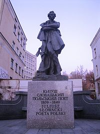

Юліуш Словацький

Короткі відомості з біографії
Ю́ліуш Слова́цький (пол. Juliusz Słowacki, 4 вересня 1809, місто Кременець, нині Тернопільської області — 3 квітня 1849) — великий польський поет і драматург, один із трьох національних поетів-пророків польської літератури поряд із Адамом Міцкевичем і Зиґмунтом Красінським.

Життєпис
Народився 4 вересня 1809 у місті Кременець на Волині. Його батько — Евзебіуш Словацький — був викладачем риторики та поетики Волинського ліцею, автором кількох драматичних творів. Мати — Саломея — була донькою управителя господарства Кременецького ліцею Теодора Янушевського, вірменського походження. Саломеї заледве виповнилося 16 років, коли 14 листопада 1808 вона підписала шлюбний контракт з Евзебіушем Словацьким, старшим від неї на 20 років. Юліуш був єдиною дитиною від цього шлюбу.
У 1811 сім'я Словацьких переїхала до Вільного (Вільнюса) — тут Евзебіуш Словацький працював на кафедрі історії польської літератури Вільненського університету. У 1814 батько помер від туберкульозу. Молода вдова з п'ятирічним сином переїхала до Городенки.
У 1818 Саломея вийшла заміж удруге. Її чоловіком став професор медицини Авґуст Бекю — вдівець, батько двох доньок.
Кінець серпня 1818 — Саломея із сином переїхала до Вільного. Вони оселилися в домі професора на вулиці Замковій (лит. Pilies). У тому ж будинку мешкав професор Єнджей Снядецький, донька якого, Людвіка, в майбутньому стане нещасливим коханням Юліуша.
З 1819 навчався в гімназії.

Словацький і Україна
У частині своїх творів Ю.Словацький відтворює чимало подій з історії України (драми: «Срібний сон Саломеї», «Беньовський» та «Ксьондз Марек» — з доби Коліївщини та Барської конфедерації; «Ян-Казимир» — дійшла в уривках, з часів Хмельниччини), змальовує пейзаж Волині і Поділля та міста Кременця («Фантазій», «Балладина», «Лілля Венеда»), використовує українські мовні елементи (Українська думка, Змій); події в драмі «Мазепа» відбуваються в одному з подільських замків. У поетичній повісті «Змій» поет у фольклорному дусі відтворює образ козацтва. У незакінченому романі «Король Лядови» (1832 р., французькою мовою) події розгортаються у славнозвісній Софіївці та на Поділлі, побіля річки Лядови (ліва притока Дністра). Також у цьому творі Ю.Словацький передбачає виникнення самостійної української літератури на фольклорній основі. Також Україні було присвячено драму «Голштинський» і «Пісня козацької дівчини».
Іван Франко назвав Словацького «співцем Поділля», бо Юліуш вважав його частиною «своєї Вітчизни давньої». Тут він провів своє дитинство, і часто приїжджав у 1825—1830 рр. до своїх родичів у маєток Юлінки у Верхівці, відвідував Бар і околиці. Згадки про мешканців Поділля — «добрі і приємні, яких мало на світі» є в його найкращих творах поемі «Беньовський» (1841) та ін.[2]

Твори Ю.Словацького перекладали на українську мову Олена Пчілка (1910 року видала книжечку про нього зі зразками його творів), Іван Верхратський, Михайло Старицький, Василь Щурат, Микола Зеров («Мазепа», римований вірш замінений на білий, «Балладина»), Максим Рильський («Кулик», «Заповіт» тощо), Микола Бажан(«Фантазій»), Марк Зісман («Українська думка»), Борис Тен («Балладина»), Дмитро Павличко («Година роздумів», «Ангеллі», «Вацлав», вірші), Роман Лубківський («Срібний сон Саломеї», «Українська думка» тощо), Василь Білоцерківський («Король Лядови», «Горштинський», «Ян-Казимир», «Крак», «Беатрикс Ченчі», «Валленрод», «Золотий череп», проза) та ін.
У 2002 р. між Україною та Республікою Польща була досягнута домовленість на паритетних умовах встановити в Києві пам'ятник Юліушу Словацькому, а у Варшаві — пам'ятник Тарасові Шевченку. У 2003 році пам'ятник Тарасові Шевченку у Варшаві було встановлено. Скульптура Юліуша Словацького була виготовлена в Польщі й перевезена до Києва з нагоди святкування 200-річчя від дня народження поета 2009 р. І тільки у вересні 2012 р. пам'ятник, який зберігався на території київського творчо-виробничого комбінату «Художник», встановили поруч із костелом святого Миколая.

Головні твори
|
Поезія
- Агезиляуш
- Ангел вогнистий — мій ангел лівий
- Беатрікс Ченчі
- Відповідь на «Псалми майбутності» (або "До автора «Трьох псалмів»)
- В альбом Софії Бобрової
- Гімн (Богородице! Діво!)
- Гімн заходу сонця на морі (Боже, смутно мені!)
- До матері
- До Міхала Роля Скибицького
- Дума про Вацлава Жевуського
- Заспокоєння
- Мій заповіт («Жив з вами…»)
- На перенесення останків Наполеона
- Невідомо що або романтичність
- Ода до свободи
- Поможи мені, Боже!
- Похорон капітана Мейзнера
- Розлука
- Розмова з пірамідами
- Совінський в окопах Волі
Поеми
- Шанфарій (1832)
- Година роздумів (1832-33)
- Подорож до Святої Землі з Неаполя (незакінчена, 1836—1837, 1839)
- Вацлав (1838)
- Ксьондз Марек (1843)
- Ангеллі (1838)
- Батько зачумлених (1839)
- У Швейцарії (1839)
- Беньовський (1841)
- Генезис із Духа (1844)
- Король Дух (незакінчена; 1845–1849)
|
Поетичні повісті
- Гуго(1830)
- Араб(1830)
- Ян Білецький(1830)
- Змій(1832)
- Лямбро(1833)
Драми
- Марія Стюарт (1830)
- Кордіан (1834)
- Балладина (1839)
- Мазепа (1839)
- Лілля Венеда (1840)
- Срібний сон Саломеї (1835)
- Горштинський (1835)
- Беатрикс Ченчі (1839-40)
- Крак (незакінчена, 1840)
- Валленрод (незакінчена, 1840)
- Беньовський (незакінчена, 1840)
- Фантазій (1841)
- Золотий череп (1842)
- Незламний князь (вільний переклад однойменної драми П. Калдерона-де-ла-Барки)(1843)
- Самуель Зборовський (1844–1845)
- Завіша Чарний (незакінчена,1844–1845)
|